LitRes
LitRes is a marketplace for writers and big publishers. An E-book store. Leader in the market for licensed e-books in Russia. The monthly audience for the company's services is 12.5 million people. More than 1.5 million books per month.
Tasks
Develop a workspace for the writers and publishers
Create a tool for them to manage their business
Re-design web reader
Evaluating the interface
- The level of involvement of writers and publishers
- Activity changes
- New Contracts
- Interface clarity and predictability
- Growth of royalties received

Problem
Writers and publishers have categorically different needs from data and levels of immersion in it. It turns out that working with paper documents discourages writers and is not obvious and operative for publishers.
About 98% of writers in LitRes only release one book, such writers use financial data to boost their own self-esteem. It's enough for them to see a positive trends. Publishers, on the other hand, analyze data in detail to find insights for new books or to time the launch of advertising campaigns or book releases. But both use the same interface.
Plan
The back-end development team and I spent several weeks with the legal department to figure out what data and how we could get. And after that, how to move the entire document process online to lower the entry point for new and old writers and increase the detail and visualization of financial reports.

Hypothesis
After researching, I suggested the idea of immediately showing general information with trends and dynamics, but give the opportunity to fall into each block or adjust to your needs workplace.
Solution
The graphs show the dynamics in the major categories of interest. Often writers just need to see the orange pluses. Large graphs can be overlaid on top of each other for detailed study.
Realization
Each element is adaptive and you can interact with it. Change its size or change its place in the grid.
 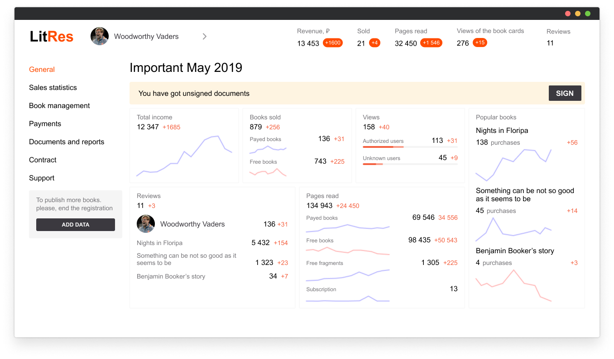
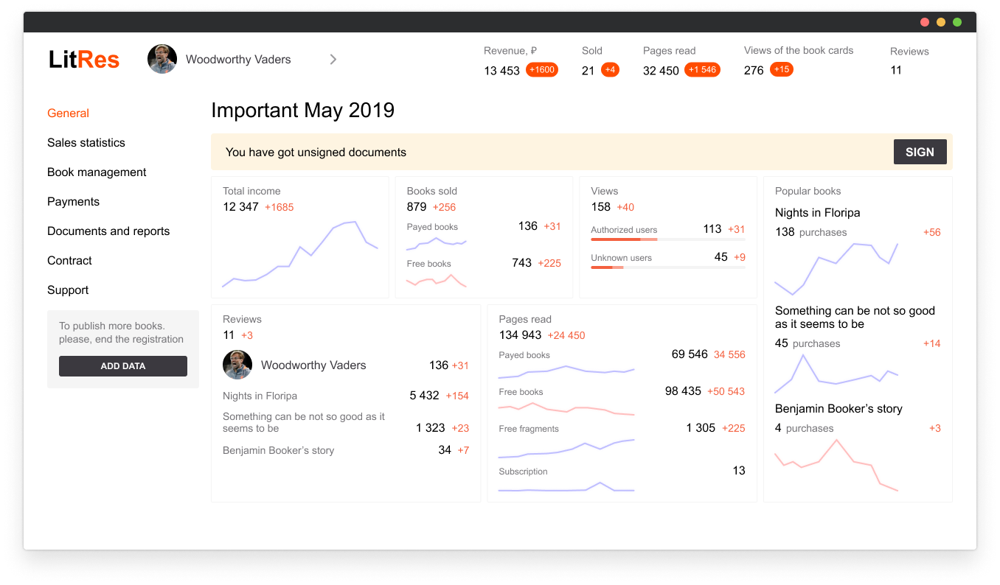

Problem
Many writers leave because of the long legal process before you can upload your book
Solution
We designed a simple online registration process for them and allowed them to download the book immediately, after filling out the basic information, but without the ability to sell it. On a free basis.
 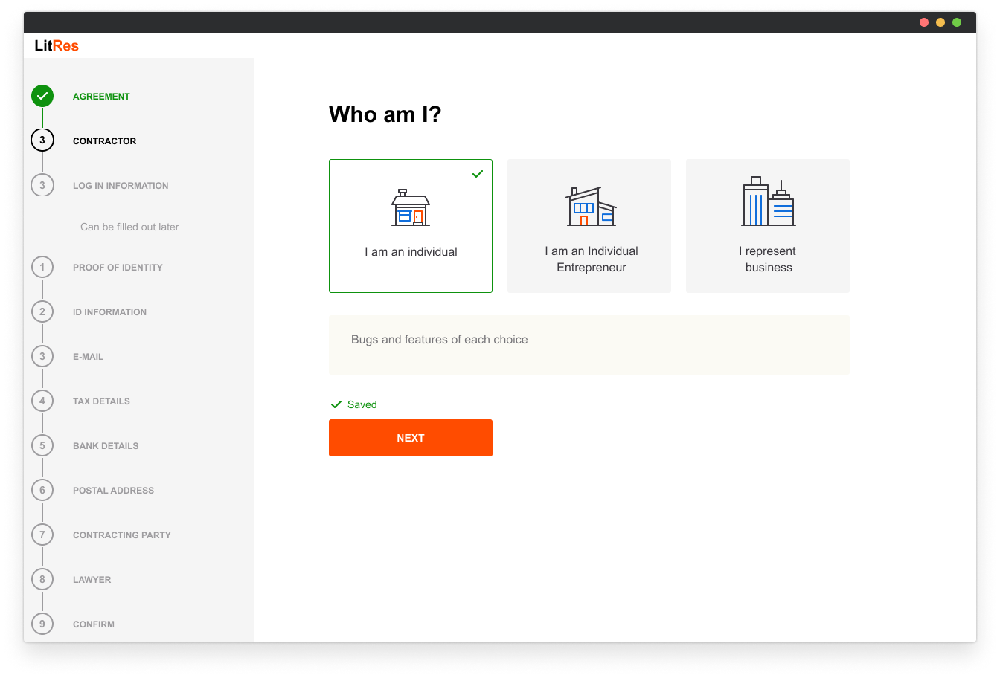
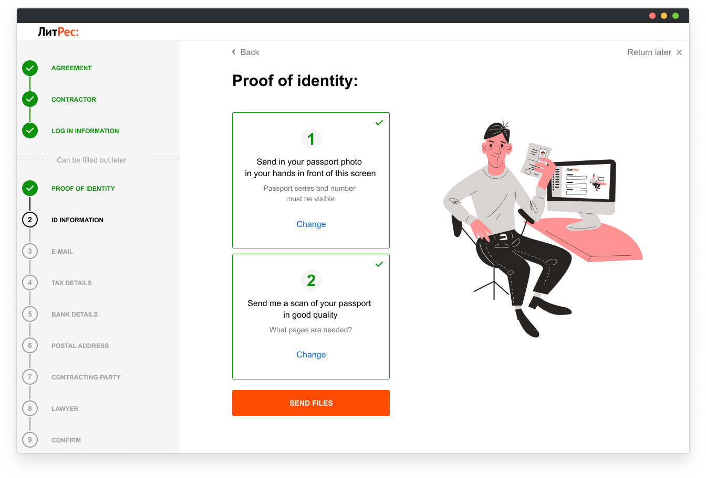
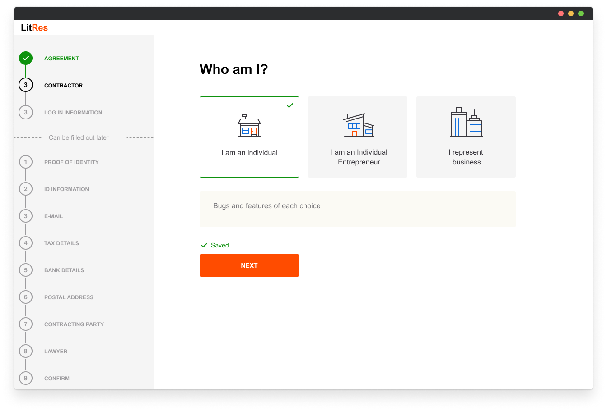
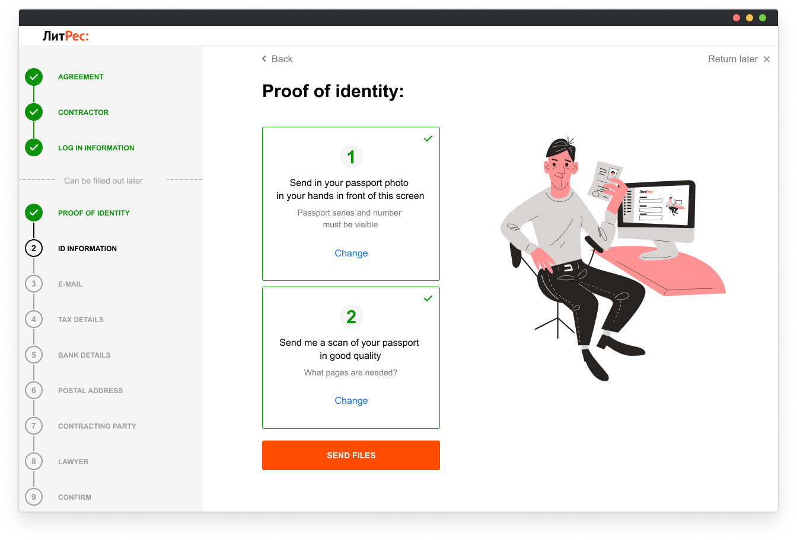
Info
Litres not only does sell books, but it is also a library service. The digital library works just like a physical public library. There is a books fund, which is filled with budget money. Employees and ordinary readers can buy books into the fund in LitRes e-store, the rights to fill the collection are configured by the administrators.
Problem
The library spent the entire budget for the quarter in the first few weeks. And this problem had to be solved with a graphic interface.
Hypothesis
Every new reader receives default rights to buy books into the fund. These rights are the same for all libraries and not everyone is aware of their existence, which means that rich and poor libraries have the same approach to the use of budget money. First we must solve the problem of individualization of rights to replenish the fund.
Hypothesis
The second problem is that library staff are mostly elderly people who do not want to mess around with computers and programs, so we need to motivate them, to make them think of the value of this work.
Solution
The Russian people have a great appreciation for power, even if they are the CEO of a simple door, other words, a security guard in a store. I have developed an interface that gives the library employee a sense of power. He personal customization of a library card to a new reader, but it's rights are basicly restricted by the general rules of the library.
Problem
After the research, it turned out that people unknowingly ruin their user experience. They often use background colors that are not contrasting, the font is too small when the book is wide, in one word typography is a whole science to ignore it. We decided to limit the reader's freedom and developed an algorithm that compensates for baseline and book format depending on the scale the reader chooses and picked safe color combinations so that everything is contrasty and the eyes don't get tired. I had no layouts left because this reader failed miserably and caused a lot of readers hate and we just cleaned up the old one.
Conclusion
The best is not always good.
 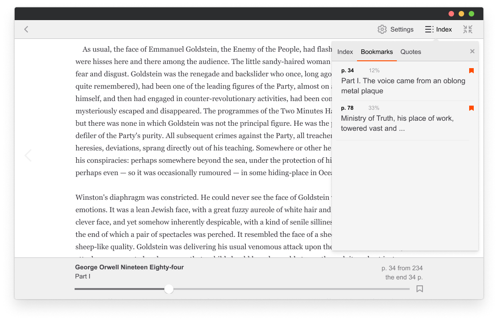
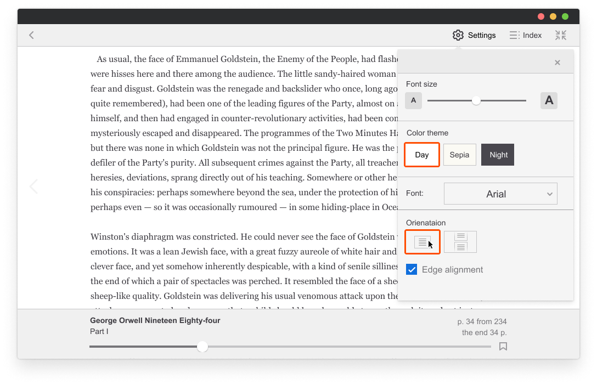
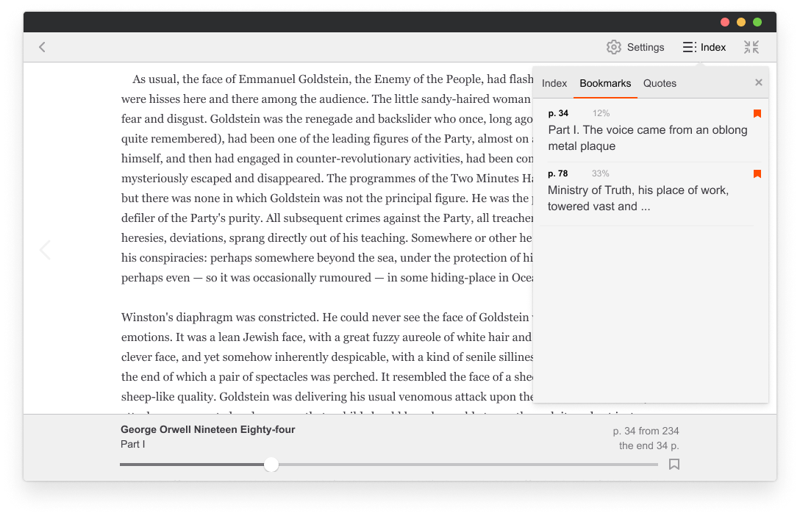
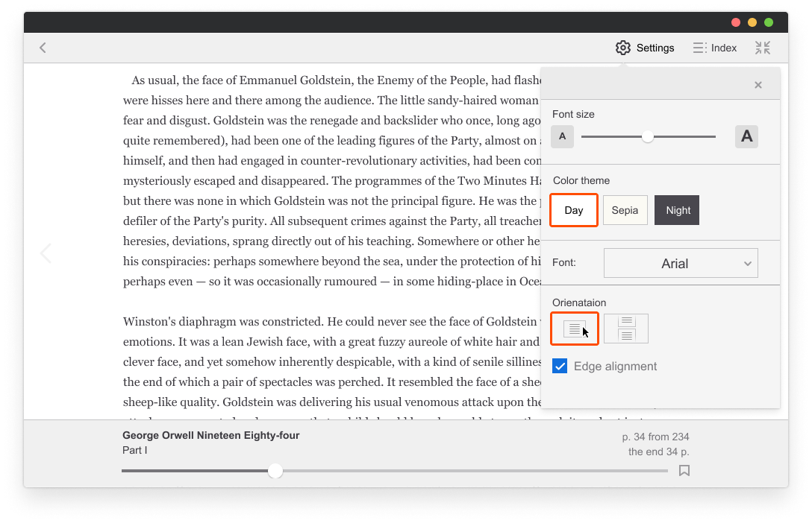
Some meditative work
Profile of the user. There was just an old one.
 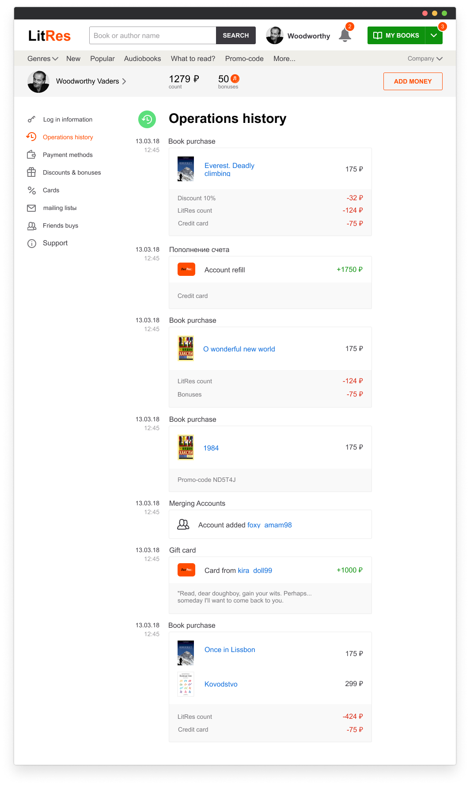
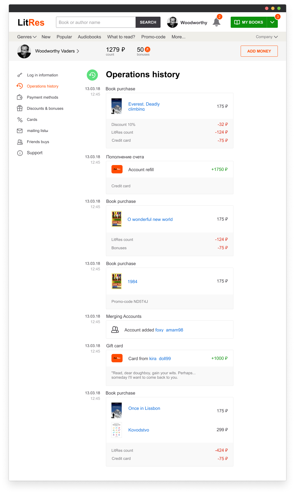

Afterwords
I've also done icons, illustrations, even some book covers like the one in the beginning. I like to meditate in this way sometimes. In LitRes, we were building a design system in Sketchapp, we had a file on a shared server, and if someone was working in it, they had to somehow show the others that they couldn't access the file, so there wouldn't be a version conflict. And we threw a stuffed minion toy at each other, and the whole office didn't understand why the design department kept throwing the minion to each other all day long.